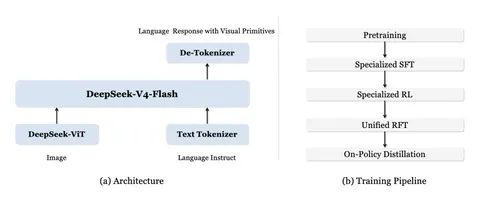

Сегодня в области мультимодальных моделей основной упор делают на языковой ризонинг. А для VLM интересно было бы перенести его в визуальное пространство. В своей статье авторы из DeepSeek предлагают делать это с помощью визуальных примитивов: точек и bounding-боксов.
Архитектура решения довольно стандартная. Берут DeepSeek-V4 (LLaVA) на 284 млрд параметров (13 млрд — активных) и прикручивают к нему трансформер DeepSeek-ViT. Он кодирует картинку размером 756x756 с помощью 324 визуальных токенов.
Стадии обучения следующие:
1. Pretraining
Добавляют дополнительные данные, чтобы модель уже на претрейне хорошо видела визуальные токены. Для этого кроулят Hugging Face и другие источники — и собирают почти 98 тысяч датасетов, которые затем фильтруют по качеству и покрытию разметки. В итоге остаётся около 32 тысяч датасетов. Bounding-боксы и точки задают в текстовом формате, а весь претрейн занимает триллионы мультимодальных токенов.
2. ColdStart Data
Для cold-start собирают отдельные датасеты по разным срезам: counting, spatial reasoning, vqa, maze navigation, path tracing. Counting делится на coarse-grained-задачи («посчитай всех медведей») и fine-grained-задачи («посчитай всех медведей, которые находятся на земле»).
Для fine-grained counting используют GQA и граф-сцены, с помощью которых генерируют более сложные запросы. Также для задач Spatial Reasoning и VQA берут реальные картинки из GQA, но такие данные получаются слишком простыми, поэтому дополнительно добавляют синтетику из CLEVR — датасета с искусственно сгенерированными сценами.
Чтобы избежать галлюцинаций, добавляют негативные семплы. Например, модель просят найти медведей на сцене, где медведей на самом деле нет.
3. Specialized SFT и Specialized RL
На стадии Specialized SFT учат две модели, стартуя с общего претрейна: одну на данных с bounding-боксами, другую — на данных с точками.
После SFT специализированные модели отдельно дообучают через GRPO. Используют три типа ревордов: на формат, качество (проверяют избыточность CoT, консистентность с ответом и прочее) и точность ответа. Для лабиринтов и path tracing добавляют дополнительные проверки, чтобы модель не хакала задачу и не строила неверные траектории. Для RL выбирают примеры, где модель отвечает не идеально, но хотя бы иногда правильно.
4. Unified RFT
Затем специализированными RL-моделями генерируют данные, на которых обучают единую модель. Для этого объединяют данные с bounding-боксами, точками и chain-of-thought.
5. On-Policy Distillation
Получившуюся модель дистиллируют сразу на две специализированные модели-учителя. После модель оценивают на counting, general VQA и других публичных visual reasoning-бенчмарках. Авторы пишут, что по качеству она конкурирует с Gemini 2.5 Flash и часто показывает первое или второе место.
Разбор подготовил
CV Time
